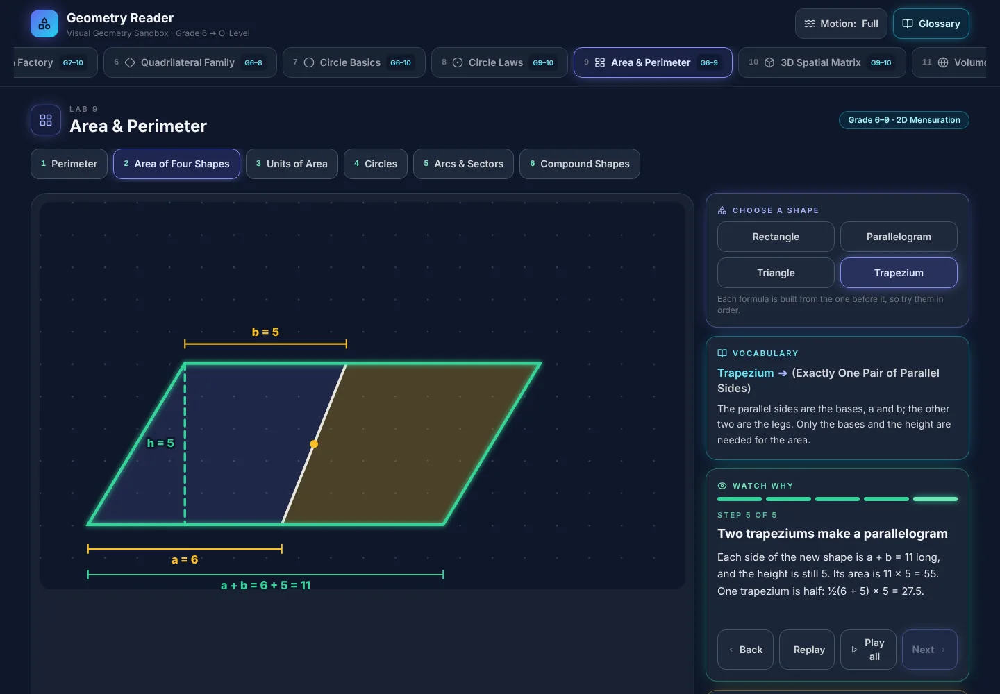
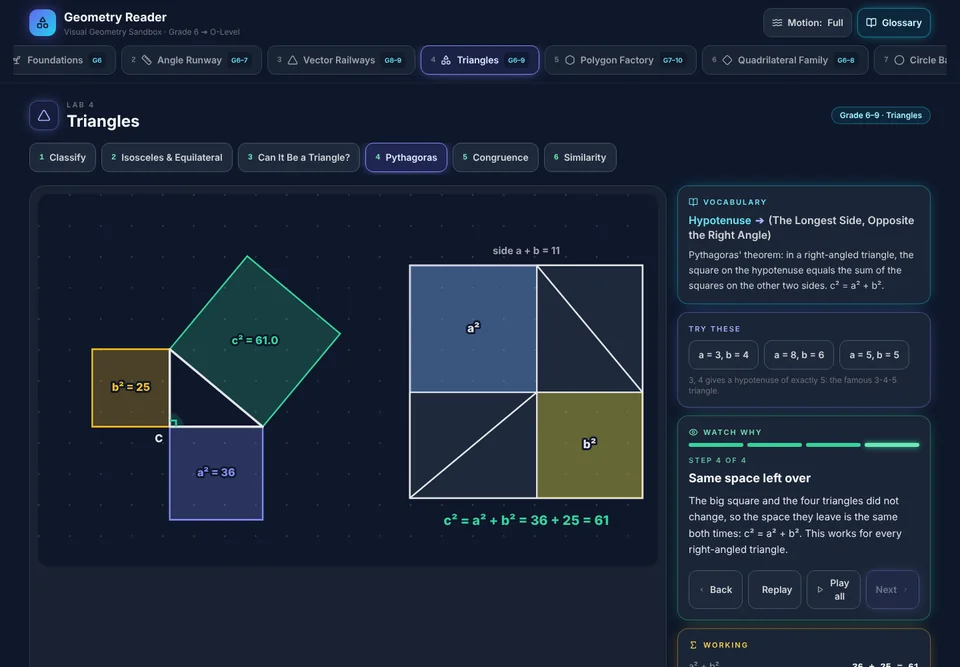
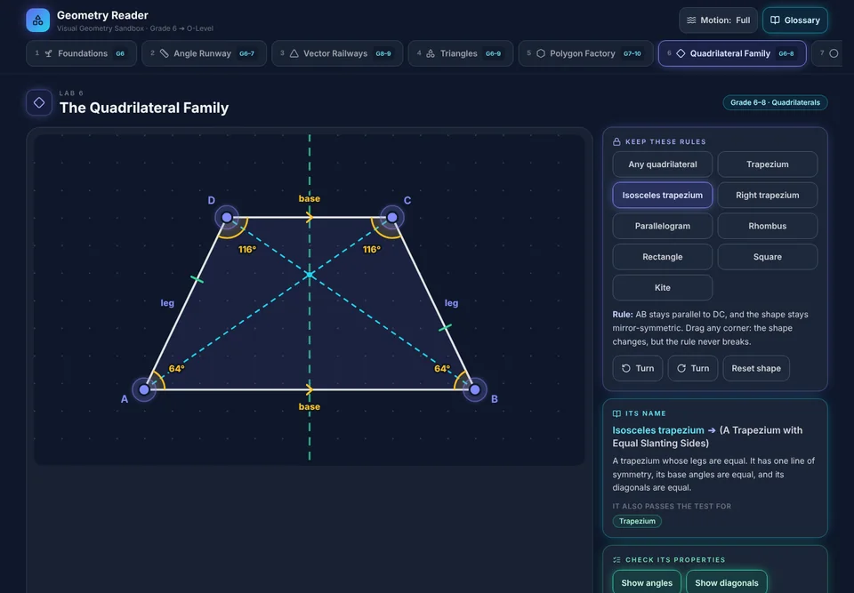
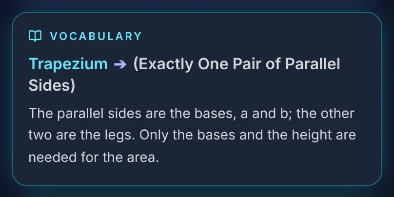
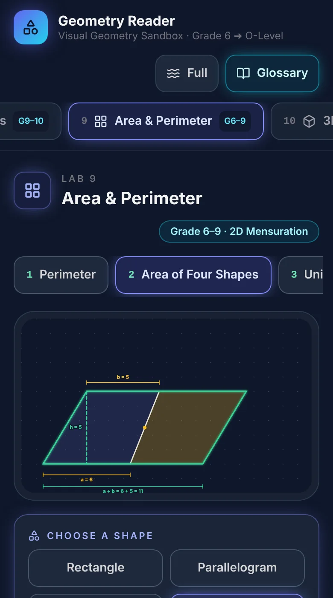

Science Readers · first module
Geometry you can see, touch and watch being proved.
Science Readers builds visual learning tools for learners with no tutor to show them why a rule is true, above all girls who study on a shared, supervised phone. Geometry Reader is the first.
- Working prototype
- In use in teaching
- Pilot study designed
Try Geometry Reader Talk to us

- 17interactive labs
- 72topics, from first geometry to O Level, and measurement
- 44visual proofs and derivations
- ~240 KBto load, in one small download
- 0accounts, trackers or data kept
Geometry Reader
The figure does the explaining
Geometry Reader puts on screen the step a good tutor gives by drawing and redrawing, seeing why a rule is true, for anyone with a browser.
-

Watch why, not just that
Proofs animate on the learner's own figure, and replay on any shape they drag it into.
-

Find the rule in the figure
Every angle, length, area and volume updates as the learner drags, so special cases are discovered, not announced.
-

Exam words, in plain words
Every formal term sits beside a plain-language version, so the vocabulary stops being a wall.
-

Light, private and calm
About 240 KB, no account, nothing left on a shared phone for anyone to check, and motion off in one tap.
Why it exists
Seeing why a rule is true is usually bought, from a tutor who draws and redraws until it lands. For a girl, it also depends on whether her parents are progressive and non-patriarchal towards her. Geometry Reader is designed to put that step within reach of any learner with a browser. It works in English for now, on the O Level syllabus, and a Bangla version on the national curriculum will follow.
Work with us
Who it is for, and how to take part
-
Schools and tutors
Use it in your teaching
Bring it in as the second explanation, where the textbook leaves confusion, and tell us where it helped.
Tell us how it went -
Girls' education programmes
Reach learners on shared phones
Built for supervised, low-data phones, keeping no record of the learner. Partnerships and licensing are agreed in writing.
Talk about a partnership -
Researchers and labs
Collaborate on the studies
Especially on household devices, gender and learning in Bangladesh. The decision log, curriculum map and research plan are shared on request.
Request the Reviewer Pack
Research
Built and studied at the same time
Geometry Reader is developed through design-based research, on two separate tracks.
Track A · learning sciences
Does watching a proof happen on your own figure deepen understanding, and does it ease maths anxiety?
Track B · gender, technology and power
How do time limits, supervision and rationed data on a shared household phone shape whether a girl can learn?
Evaluation comes next: a pilot study, scored by a second rater who does not know which lessons used the tool, is ready for ethics review.